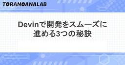

虎の穴ラボ技術ブログ
https://toranoana-lab.hatenablog.com/
虎の穴ラボ株式会社所属のエンジニアが書く技術ブログです
フィード

Devinで開発をスムーズに進める3つの秘訣
虎の穴ラボ技術ブログ
こんにちは！虎の穴ラボ nagaです。 以前お伝えした通り、虎の穴ラボではAIエージェント「Devin」を導入しています。今回は導入から約3ヶ月経った今、Devinにうまく開発を進めてもらうために意識していることを3つ紹介します。 toranoana-lab.hatenablog.com 1. プロンプトを改善する Devinが想定した実装をしてくれない・・・と感じた時は、セッションの詳細画面から消費したACUとプロンプト改善の提案を確認するのがおすすめです。 まずは先日磯部さんが紹介していた節約Tipsにもある通り、10ACU以内の作業になっているかを確認してみましょう。もし10ACUを超え…
5日前
虎の穴ラボで第一号！産後パパ育休を取得した話
虎の穴ラボ技術ブログ
虎の穴ラボで第一号！産後パパ育休を取得した話 産後パパ育休を取得した話 「育休、特に産後パパ育休に興味はあるけど、会社で取得した人がいなくて不安…」 そんな風に考えているエンジニアの皆さん、こんにちは！ 虎の穴ラボで働く、一児の父になったエンジニアの awamo です。 今回は、私が社内で第一号となった「産後パパ育休（出生時育児休業）」を取得した際の体験談をお話しします。 この記事を読めば、産後パパ育休のリアルな実態から、虎の穴ラボのカルチャーまで、きっと理解が深まるかも。 結論から言うと、不安もありましたが、本当に取得して良かったです！ 「産後パパ育休（出生時育児休業）」とは？ 「産後パパ育…
6日前

Devin 節約Tips
虎の穴ラボ技術ブログ
虎の穴ラボエンジニアの礒部です。 現在、虎の穴ラボではDevinを活用していますが、使用料金への対応が避けられない課題です。 今回は節約のために試している様々なTipsを紹介します。 Devinとは？ Devinは、ソフトウェア開発タスクを自律的に実行できるAIエージェントです。コーディング、デバッグ、さらにはプロジェクト全体の計画立案まで、開発プロセスにおける多様なタスクを人間のようにこなす能力を持ち、開発の効率化に貢献します。 devin.ai 虎の穴ラボでも、試験的ではありますが導入を開始し、日々タスクの依頼を行なっています。 虎の穴ラボの直近のAI活用に向けたツール利用については次の記…
11日前
LLM研究における"aha moment"について調べてみた
虎の穴ラボ技術ブログ
虎の穴ラボエンジニアの米光です。 AIが生成する文章は日々洗練され、最近ではチャットAIとの対話で違和感を感じる機会も減ってきたように感じます。 そんな中、LLM研究において"aha moment" と呼ばれる、AIがまるで人間のような振る舞いを見せる現象について知る機会がありました。 AIがまるで「あっ、そうか！」とひらめいたかのように振る舞う、いわゆる「アハ！モーメント」。この現象がAI研究でどのように捉えられているのかを巡り、調査を行なってきたので共有します。 アハモーメントとは アハモーメント（Aha! moment）とは、元々は心理学の用語で、難しい問題の解決策が突然ひらめく体験のこ…
13日前
奈良女子大学の講義に登壇！虎の穴ラボCEO・EMが語る現場のリアル
虎の穴ラボ技術ブログ
こんにちは！虎の穴ラボ 採用担当白石です。 6/27(金)虎の穴ラボ CEO野田、EM松尾が奈良女子大学様の講義登壇をさせていただきましたので、ご紹介します！ なぜ奈良女子大学で講義を？ 虎の穴ラボは、「とらのあな通信販売」「Fantia」などのサブカルチャー関連サービスの開発・運用を担っています。 常に新しい技術を取り入れ、より良いサービスを提供することを目指す中で、次世代のエンジニア育成にも貢献したいという思いがありました。 そんな折、虎の穴ラボ社員との交流があった奈良女子大学様よりお声がけいただき、学生の皆様に実際の開発現場やプロジェクトマネジメントについてお伝えする機会をいただきました…
18日前
サブカル業界Developers勉強会 vol.9を開催しました！
虎の穴ラボ技術ブログ
こんにちは、虎の穴ラボ 磯江です。 今回は2025/6/6(金)に開催した「サブカル業界Developers 勉強会Vol.9」の開催レポートをお届けします。 今回のテーマは『沼にいざなう！サブカルプラットフォームの検索・レコメンド舞台裏』ということで、サブカルプラットフォームの運用に携わる各社のここでしか聞けない検索やレコメンドに関するサービスの裏側をお話しました。 オフライン会場としてviviONさんのオフィスで開催し、各セッションはオンラインでも配信しました。 セッション終了後は、各セッションスピーカーを中心とした懇親会を実施しました。 ▼イベント概要 subculturedev.con…
20日前
【JavaScript】Deno についてのLT会 toranoana.deno #21 を開催しました【TypeScript】
虎の穴ラボ技術ブログ
皆さんこんにちは、虎の穴ラボのY.Fです。 2025年06月18日 (水) に Deno についてのLT会 『toranoana.deno #21』を開催しました。 yumenosora.connpass.com
25日前
VS Code の拡張機能「Dev Containers」を使いこなす！おすすめ設定10選
虎の穴ラボ技術ブログ
こんにちは。虎の穴ラボのサカガミです。 今回は Visual Studio Code (以下 VS Code) で利用できる 拡張機能「Dev Containers」のおすすめ設定を紹介します。 Dev Containers とは？ Dev Containers は、VS Code の拡張機能で、開発環境をコンテナ化することで、 開発者が統一された環境で作業できるようにするものです。 これにより、異なるマシンでの環境設定のばらつきを防ぎ、 プロジェクトの依存関係を一元管理できます。 Dev Containers を使用することで、開発者は簡単に環境を共有し、 プロジェクトに必要なツールやライブ…
1ヶ月前
#技術書典18 ブース施策チームレポート
虎の穴ラボ技術ブログ
こんにちは。虎の穴ラボのH.Kです。 6/1（日） 池袋サンシャインシティ 展示ホールD（文化会館ビル2F）で開催された、技術書典18のオフラインイベントに出展しました。オンラインは2025/06/15（日）までなので、ぜひ気になる本を探してみてください！ techbookfest.org 虎の穴ラボは技術書典18のゴールドスポンサーをしています。 イベント全体の詳細なレポートについては、また別途記事を公開していますので、こちらをご覧ください。 toranoana-lab.hatenablog.com 今回は、ブース施策チームとして、技術書典18で私たちがどんな施策を行ったのか、その裏側をご紹…
1ヶ月前
#技術書典 18 オフライン参加レポート
虎の穴ラボ技術ブログ
こんにちは！虎の穴ラボでエンジニアをしている S.A です。 先日の 2025年6月1日に技術書典18のオフライン開催がありました！ 虎の穴ラボでは、スポンサーとして協賛ブースを出展しました。今回はその様子をレポートします！ 技術書典18について 日時: 2025年6月1日 日曜日 場所: 池袋サンシャインシティ 文化会館 展示ホールD (文化会館ビル 2F) techbookfest.org 技術書典とは、技術をテーマにした同人誌の即売会で、技術者たちの「コミケ」とも言われるイベントです。 今回で18回目の開催となり、前回からさらに参加人数が増え、2,800人もの参加者が来場しました。 ▼当…
1ヶ月前
FlutterとServerpodで始めるWeb開発入門
虎の穴ラボ技術ブログ
こんにちは、とらのあなラボ Fantiaエンジニアの吉岡です。 今回はFlutterと強力に連携できるServerpodを用いて、ログイン機能付きのシンプルなメモアプリを開発する手順を解説します。 Serverpodとは Serverpodは、Flutter向けにDartで作られたオープンソースのwebフレームワークです。 事前準備 Serverpodを使うにはまずFlutterとDockerのインストールが必要です。 こちらは既にインストールされているものとして進めていきます。 Serverpodのインストール dartのpub コマンドからインストールが出来ます dart pub glob…
2ヶ月前
Javaのライブラリ「SpringAI」を使ってMCPサーバー作成を試してみた！
虎の穴ラボ技術ブログ
こんにちは、虎の穴ラボのH.Hです。 今回は現在開発が進んでいるSpringフレームワークの一部であるMCPサーバーを作成し、その挙動を調査した内容をまとめました。 ※2025/5現在開発中のライブラリを使用しているので、今後記述方法が変わる可能性があります。 前半がMCPの説明で、後半が実際のコードや設定方法となっています。 コードなどを確認したい方は「SpringAIのMCPサーバーサンプルについて」からをご確認ください。 SpringAIとは MCP(Model Context Protocol)とは USB-Cポートのようなものってどういうこと？ エンジニアの方向け 非エンジニアの方向…
2ヶ月前
Fantiaで実施したRuby / Ruby on Railsアップデート作業のご紹介
虎の穴ラボ技術ブログ
虎の穴ラボでFantiaの開発を担当している Y.K です。 今回はFantiaで実施したRubyとRuby on Rails(以下Railsと表記します)のアップデートについて、どのような手順で実施したかについてご紹介できればと思います。 背景 虎の穴ラボでは言語やライブラリ、各種サービスで利用しているシステム(DBなど)について定期的にアップデートを行いサポート内かつ脆弱性がないバージョンを保つように日々対応を行っています。 今回はFantiaで利用しているRuby / Railsについてそれぞれ以下の期限でEOLを迎えることとなり、それぞれについてアップデートを行っています。 対象 バー…
2ヶ月前
Kubernetesを取り巻くAIツールの紹介 〜k8sgpt〜
虎の穴ラボ技術ブログ
こんにちは、虎の穴ラボのY.N.です。 昨今、AIを活用した技術が目まぐるしい発展をしています。 KubernetesでもAIを活用したツールがあります。 今回は、Kubernetesのトラブルシューティングに役立つAIツール k8sgpt を紹介します。 前提 本記事では下記環境を使用することを前提として記載します。 開発環境：Mac コンテナ：Docker Kubernetes：kind AIプロバイダ：OpenAI k8sgpt 何ができるの？ k8sgptはAIを活用してKubernetes環境における問題の診断を行ってくれるツールです。 また、問題の自動修復も行え、Kubernete…
2ヶ月前
技術書典18への協賛 && オフライン開催への参加を行います！
虎の穴ラボ技術ブログ
こんにちは。虎の穴ラボのY.Kです。 虎の穴ラボは 2025年5月31日(土) ~ 2025年6月15日(日) の期間で開催される技術書典18にゴールドスポンサーとして協賛を行います！ こちらの内容は既に以下のプレスリリースにて発表をさせていただいている内容ではございますが、改めてこちらのブログでもご紹介させていただければと思います。 toranoana-lab.co.jp 技術書典18について 技術書典18はオンライン・オフラインで開催されるイベントとなっており、開催日程はそれぞれ以下のようになっております。 オンライン開催 期間: 2025年5月31日(土) ~ 2025年6月15日(日)…
2ヶ月前
5月🎏Fantia採用イベントをご紹介します！
虎の穴ラボ技術ブログ
こんにちは！虎の穴ラボ 白石です。今回は5月開催の採用イベントについてお知らせします🎶 5月はFantia関連のポジションを対象として2つの採用説明会＆相談会を開催します！ ひとつは手軽に参加できるオンライン形式、もうひとつは少人数でじっくり話せるオフライン形式です👀 この記事では、これら2つのイベントのポイントをご紹介し、虎の穴ラボで働くことの魅力をお伝えします。 「好き」を仕事にしたい方、リモートワークに興味がある方、そして何よりFantiaというサービスにピンと来た方は、ぜひ最後までチェックしてください！ 🦄Fantiaとは Fantiaは、イラスト、漫画、小説、音楽、コスプレなど、様々…
2ヶ月前
Session Managerを使ったEC2へのSSH接続をSlackへ通知 ※Terraformコードあり
虎の穴ラボ技術ブログ
こんにちは、とらのあなラボのはっとりです。 EC2インスタンスへのSSH接続は日常的な作業ですが、セキュリティと監査の観点から、誰がいつ接続したのかを把握することは非常に重要です。AWS Systems Manager Session Managerを使えば、セキュリティグループでSSHポート(22番)を開けることなく、安全にインスタンスへ接続できます。 今回は、Session ManagerでのSSH接続イベントをトリガーに、AWS ChatBot (※) 経由でSlackに通知する仕組みをTerraformで構築する方法をご紹介します。 ※現在はAmazon Q Developer in …
2ヶ月前
話題のAIツールRooCode導入記：メリット・デメリットと使いこなしのコツ
虎の穴ラボ技術ブログ
こんにちは、虎の穴ラボのH.Y.です。 今回は、2025年3~4月にRooCodeを使って開発してみた時の所感を話したいと感じました。 RooCodeとは RooCodeは ClineベースのAIコーディングアシスタント。 Visual Studio Code拡張機能として利用可能。 Roo CodeはClineを拡張・改良したもの。 コード補完に留まらない自律的な作業が特徴。 docs.roocode.com という特徴を持つツールです。 また、LLMモデルも自分で選択できます。 OpenAI、Gemini、ClaudeなどメジャーどころのLLMを使えます。 また、Ollamaなどを使用して…
2ヶ月前
関東IT健保の福利厚生で健康をサポート
虎の穴ラボ技術ブログ
皆さん、こんにちは！虎の穴ラボ採用担当白石です。 転職活動や就職活動において、企業の魅力は何でしょうか？ 面白い仕事内容、共に働く仲間、会社の雰囲気、そして…「福利厚生」ですよね！ 特に長く安心して働く上で、福利厚生は欠かせない要素だと考えている方も多いのではないでしょうか。 当社の魅力の一つとして今回は、虎の穴ラボが加入している健康保険組合「関東ITソフトウェア健康保険組合」（通称「関東IT健保」）について、その活用方法や実際にメンバーがどのように活用しているのかを生の声も交えながらご紹介したいと思います！ 関東IT健保とは？ 手厚いサポートが魅力の健康保険組合 まずは、関東IT健保について…
3ヶ月前
Gemini Code Assist for GitHubを使いプルリクをギャル口調でレビューしてもらう!GoogleのAIコードレビュー試してみた!
虎の穴ラボ技術ブログ
GitHubにAIコードレビュー機能(Gemini Code Assist for GitHub)を追加してみたところ、ギャルにレビューされるようにできました！ 虎の穴ラボのH.Hです。 コードレビューの仕組みはこれまでにもさまざまあり、たとえばプルリクエストのテンプレートなどは以前から一般的に使われていると思います。最近では、AIを活用したレビューの仕組みも増えてきました。そんな中で、今回はGoogleのAI「Gemini」のCode Assistを使って、どのようにレビューを行えるのかを試してみました。 せっかくなので、レビューを少し親しみやすいものにしたいと思い、先月話題になった“ギャル…
3ヶ月前
フィッシングメール訓練ツール「Gophish」を使ってみた
虎の穴ラボ技術ブログ
こんにちは、虎の穴ラボの泉です。 今回はフィッシングメール訓練に利用できる Gophish を使ってみたので紹介させていただきます。 1.Gophishとは Gophish はオープンソースのフィッシングメール訓練ソフトです。 getgophish.com 毎年多数の被害が発生しているランサムウェア攻撃、標的型攻撃などはフィッシングメールを足がかりにして攻撃を仕掛けられることも多々あります。 組織として被害リスクを下げるためにメールの訓練は定期的に実施したい場合などに利用することができます。 2.導入 Docker を使用した方法で導入していきます。 以下のコマンドでイメージをpullします。…
3ヶ月前
虎の穴ラボで「Devin」導入に向けて実践したTips 3選 〜AI用モノレポ作成、ナレッジ整備など〜
虎の穴ラボ技術ブログ
こんにちは。虎の穴ラボのH.Kです。 近年注目を集めるAIエージェント「Devin」。本記事では、筆者が開発チームでDevinを効果的に活用するために実践した、具体的なTipsについて解説します。 Devinとは？ チーム内での使い方Tips 1. モノレポ化による開発効率の向上 「クリエイティア」サービスでのリポジトリ統合 共通ルール・ナレッジベースの構築 2. Knowledge（ナレッジ）ドキュメントの整備とサンプル 3. お試しタスク用Playbookの作成 Playbookとは Playbookのサンプル Rubocopの修正 Dependabotのプルリク作成 オンボーディングでの…
3ヶ月前
虎の穴ラボではDevinやRoo Codeなどの活用を積極的に進めています！
虎の穴ラボ技術ブログ
皆さんこんにちは。虎の穴ラボのY.Fです。 昨今、エンジニアリング領域に関するAI関連の話題をよく見かけると思います。本記事では、そのようなAI関連について、虎の穴ラボがどのように取り組んでいるか紹介したいと思います！ 概要 本記事では以下2つのAIエージェントの導入、検証を進めています。 Devin 自立型AIソフトウェアエンジニア GitHubやSlackと連携し、依頼することで自律的にソフトウェアの改修、構築を行いプルリクエストなどを作ってくれる devin.ai Cline(Roo Code) VSCodeの拡張機能として利用できるコーディングエージェント VSCode上のウインドウか…
3ヶ月前
ColosoでGoogleデザイナーのUI/UXデザイン講義を受けてみた②
虎の穴ラボ技術ブログ
こんにちは、虎の穴ラボ デザイナーのWRです。 現在スキル向上の一環として、VOD型オンライン教育サービス「Coloso」でGoogleデザイナーから学ぶUI/UXの講座を受講しています。 前回に引き続き、そちらの進捗と感想を掲載していきます！ ⬇︎前回の記事はこちら toranoana-lab.hatenablog.com 目次 ProtoPie(Basic~Advanced） 実践編 AI活用 おまけ：講座で紹介された便利なサービス、本講座のレベル感など P.S. 採用 LINEスタンプ ProtoPie(Basic~Advanced） 講座では、プロトタイプ技術の必要性について説明されて…
3ヶ月前
ColosoでGoogleデザイナーのUI/UXデザイン講義を受けてみた①
虎の穴ラボ技術ブログ
こんにちは、虎の穴ラボ デザイナーのWRです。 現在スキル向上の一環として、VOD型オンライン教育サービス「Coloso」でGoogleデザイナーから学ぶUI/UXの講座を受講しています。 今回からそちらの感想を全2回にわたり掲載していきますので、どうぞよろしくお願いします！ 目次 「Coloso」とは 今回選んだ講座 受講した目的 いざ受講！ デザイナーの心得 1. アイデアを一早くハイクオリティのデザインに作り出すことができる 2. 大部分のデザインには理由がある。 3. 優れたストーリーテリングのスキル 4. デザインを作り出す量が多い 5. 大きな絵と小さな絵を一緒に見る Figma(…
3ヶ月前
AIエージェント未経験者がClineを利用して分かった気をつけるべきポイント
虎の穴ラボ技術ブログ
こんにちは！虎の穴ラボエンジニアの米光です。 皆さん、AIエージェントによるコーディングは利用されていますでしょうか。私も日常的に詰まったポイントを社内のチャットAIに質問するなど、AIにコーディングを補助してもらっています。しかし、ClineのようなAIエージェントを利用し、コード全体を書いてもらう経験はまだありませんでした。 ですがAIエージェントの流行、進化のスピードは非常に目まぐるしく、すでに様々な選択肢が登場しています。今後自分も必ず使う機会が出てくるだろうと考え、今回Clineに初挑戦しました。本記事では、コーディングアシスタント初心者目線でCline利用し、今後エージェントを利用…
3ヶ月前
Terraform + Ansible + Docker で EC2 環境構築を効率化
虎の穴ラボ技術ブログ
こんにちは、とらのあなラボのはっとりです。 今回は、Terraform で構築した EC2 インスタンスに対して、Ansible を使って環境構築を自動化する方法をご紹介します。Docker を活用することで、環境構築の手間を大幅に削減し、チームメンバー間での共有も容易になります。 構築する環境 最終的な構成は以下の通りです。 . ├── .env # AWS認証情報を記載 ├── .gitignore # Git除外設定 ├── Dockerfile # Dockerイメージ定義 ├── ansible │ ├── inventories │ │ └── terraform.yaml # T…
4ヶ月前
Docker版Nessusではじめる簡単な脆弱性診断
虎の穴ラボ技術ブログ
こんにちは、虎の穴ラボの山田です。 今回はNessusという脆弱性診断ツールを使用した、簡単な脆弱性診断方法を紹介したいと思います。実は以前にも「Nessusで行う簡単な脆弱性診断」と言う記事を書いているのですが、その時には無かったDocker版が現在は提供されています。内容の更新も兼ねて、今回はこちらのDockerコンテナを利用したNessusによる診断方法を紹介します。 はじめに NessusはTenable社が提供する脆弱性診断ツールです。 エディションにより診断内容も異なるのですが、今回は無償で利用できるNessus Essentialsを使用します。Nessus Essentials…
4ヶ月前
初めてのLaravelCloud：リソース設定ガイド
虎の穴ラボ技術ブログ
こんにちは。虎の穴ラボDXエンジニアのHoshiです。 現在私は主にRubyを使用して開発しているのですが、虎の穴ラボに入社する前はPHPでLaravelを触っていました。 そんな中技術ニュースなどでLaravelCloudなるものがリリースされたと知り、プロジェクトのデプロイまで実践してみました。 この記事を通じてデプロイまでの流れを紹介ができればと思います。 ※執筆時点(2025/03/20時点)での情報です。最新の情報は更新される可能性があるため、公式サイトも参照ください。 cloud.laravel.com 対象読者 LaravelCloudとは LaravelCloudの価格 Lar…
4ヶ月前
個人的にReactをさわりはじめた時に知りたかったこと
虎の穴ラボ技術ブログ
こんにちは、虎の穴ラボFantiaエンジニアのNSYです。 Fantiaではフロントエンドに、JavaScriptのライブラリであるReactを一部採用しており、特に複雑な画面を作る際に積極的に使っています。 今回は初心者向けに、個人的にReactをさわりはじめた時に知っておきたかったなと感じたことを3つ紹介したいと思います。 1. カスタムフックによるロジックの分割 Reactには便利なフックが多く存在します。 それら便利なフックを使用することでパフォーマンスを意識した開発をすることができます。一方で要件が複雑になると、コードも複雑になり段々と苦しくなる場合があったりします。 カスタムフック…
4ヶ月前